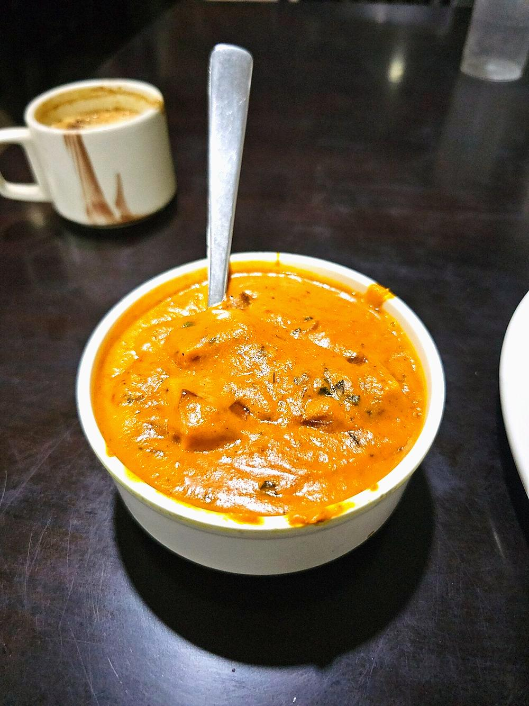

Paneer Butter Masala
paneer in a glossy tomato and cashew gravy, sweet with butter and finished with cream

Contains: milk, tree nuts
Checked against the ingredient list for ten allergens: milk, egg, fish, crustaceans, tree nuts, peanuts, sesame, mustard, soy and gluten. Brands vary, so read the label on anything new to you.
Ingredients
Quantities for 4.
- 400g, cut into 2cm cubes Paneer
- 700g, roughly chopped Tomatoripe and red; pale tomatoes give a dull gravy
- 60g, soaked 20 minutes in hot water Cashewthe body of the sauce, not a garnish
- 60g Butter
- 60ml Cream
- 1, quartered Onion
- 1 tbsp, roughly chopped Ginger
- 6 cloves Garlic
- 2 tsp Kashmiri Chillifor colour without much heat
- 1 tsp Garam Masala
- 1 tbsp, crushed between the palms Kasuri Methithe flavour people cannot place
- 1 tsp Sugarbalances the tomato, it should not taste sweet
- 3 Cardamomoptional
- to taste Salt
Cookware
stovetop, kadhai, blender
Before you start
- The gravy is boiled and blended, not fried in the usual bhuna way. That is what keeps it smooth and bright rather than dark.
- Soak the cashews properly. Under-soaked nuts leave a grainy sauce that no amount of blending fixes.
Method
- Simmer the tomato, onion, ginger, garlic, cardamom and soaked cashews with 200ml water for 20 minutes, until everything collapses.No oil at this stage. It is a stock, not a fry.
- Cool slightly, blend to a completely smooth puree, then pass it through a sieve. The sieve is what separates this from a home-style curry.
- Melt the butter in the pan, add the kashmiri chilli off the heat so it blooms without burning, then pour the puree back in.Off the heat for the chilli: it scorches in seconds and turns bitter.
- Simmer 10 minutes until it thickens and the butter shows at the edges. Season with salt and the sugar.
- Stir in the paneer and cook 4 minutes, no longer. Add the garam masala, crushed kasuri methi and cream.Long cooking makes paneer rubbery. It only needs to warm through.
- Rest 5 minutes off the heat before serving with naan or jeera rice.
Storage
Keeps 2 days refrigerated. The sauce thickens as it stands, so loosen with a splash of milk or water and reheat gently. Freezing splits the cream.
Nutrition Good estimate
High protein: 24 g a serving, 16% of the calories
| Per serving361 g | Per 100 g | |
|---|---|---|
| Calories | 611 kcal | 170 kcal |
| Protein | 24.5 g | 7 g |
| Carbohydrate | 23.0 g | 6 g |
| of which sugars | 10.7 g | 3 g |
| Fibre | 4.6 g | 1 g |
| Fat | 48.8 g | 14 g |
| of which saturated | 25.4 g | 7 g |
| of which unsaturated | 17.4 g | 5 g |
Ingredients given to taste count as zero, so the real figures run a little higher. Nearest database match used for garam masala. Estimated from raw ingredients using USDA FoodData Central.
Times, yields, allergens and nutrition are guidance. Use your own judgement on doneness and on storing. More in About.